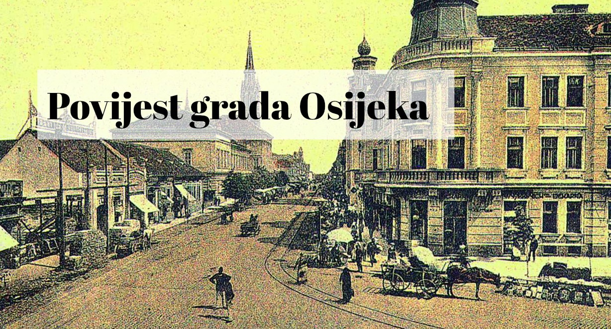

Drava. Opjevana rijeka izvire u Italiji, na području južnog Tirola. Duga 725 kilometara, iz Italije svoje vode neumoljivo usmjerava prema istoku. Prolazi kroz austrijsku pokrajinu Korušku i nastavlja svoj put kroz Sloveniju. Riječne obale Drava zatim nježno dodiruje u Hrvatskoj, gdje se na krajnjem istoku zemlje ulijeva u silni i moćni Dunav. A posljednja urbana stanica kroz koju Drava prolazi prije nego njene vode Dunav nesmiljeno ponese u beskrajna prostranstva Crnog mora jest – Osijek.
U svojoj povijesti i prepoznatljivosti Osijek je neizostavno povezan s ovom rijekom. Grad na Dravi – mada na svojem dugom putovanju prolazi kroz brojne gradove, prva asocijacija na ovaj izraz ipak će biti Osijek. Grad bogate povijesti i duge srednjoeuropske tradicije.
Područje Osijeka naseljeno je još od starog kamenog doba, a arheološki nalazi s područja Retfale govore o prvim stanovnicima ovih područja još prije 8.000 godina. No, arheološki lokalitet po kojem je Osijek daleko prepoznatljiviji ipak je nešto mlađi i smješten je upravo uz Dravu, na mjestu današnjeg Donjeg grada. Mursa – Osijek rimskog razdoblja, iz prvih stoljeća Nove ere. U prvoj polovici 2. stoljeća veliki car Hadrijan, utvrditelj strogih granica Rimskog carstva, Mursu je uzdigao na status grada-kolonije. S rimskim vojnicima u Mursu dolazi rimsko građanstvo i građansko pravo, ali i kršćanstvo.
S nestankom Rimskog carstva nestaje i Mursa – ostavlja tek tragove drevne civilizacije na obalama koje oplakuje nježna rijeka Drava. Osijeku, ali i ostatku Europe slijedi mračno razdoblje srednjeg vijeka, ispunjeno vladarskim previranjima i neprestanim pomicanjima granica. Prijetnja dolazi s Istoka, u liku turskih osvajača. Osijek je pod osmansku upravu pao 1526. godine, nakon što su Mađari izgubili veliku bitku na Mohačkom polju. Mirisi i okusi Istoka osvajaju osijek – održavaju se brojni sajmovi i Osijek postaje pravi trgovački grad. Rijeku Dravu i močvarne predjele Baranje premošćuje slavni Sulejmanov most, koji je vodio sve do Darde. Mnogi su ga nazivali osmim čudom svijeta.
Od turskog Osijeka danas gotovo nema niti traga. Samo mali djelić zidina koje su nekada održavale stabilnost ovog dijela Osmanskog carstva, nekolicina povijesnih spisa i predaje koje su danas već pomalo zaboravljene. Turska moć u 17. stoljeću počinje slabiti, a 1687. godine Osijek ponovno postaje dio zapadne civilizacije. U plamenu nestaje Sulejmanov most, kao što je nestao i cijeli beskraj svjetova nekih zaboravljenih vremena.
Pod austrijskom vojnom upravom nastaje najprepoznatljiviji dio Osijeka danas – barokna jezgra Tvrđa. Vojni režim i disciplina zaslužni su za nastanak niza baroknih dragulja, koji i danas krase grad na Dravi. Stambeno-vojna utvrda nastala je pod nadzorom generala Johanna Stephana baruna von Beckersa, u strahu od novih napada oslabljelog Istočnog diva. Trg svetog Trojstva, Generalat i mnoge druge znamenitosti Tvrđe i danas se koriste i nisu tek napušteni spomenici nekoj boljoj prošlosti. Tvrđa je danas sjedište kulture i znanosti – muzeji, galerije, fakulteti, Sveučilište... svi oni svoje postojanje vežu uz vjerojatno najljepši dio osječke prošlosti, sadašnjosti i budućnosti. U Tvrđu i Osijek novi val kršćanskog duha dolazi s franjevačkim redom. Malom braćom koja i danas imaju veliku ulogu u kulturnom i vjerskom životu grada.